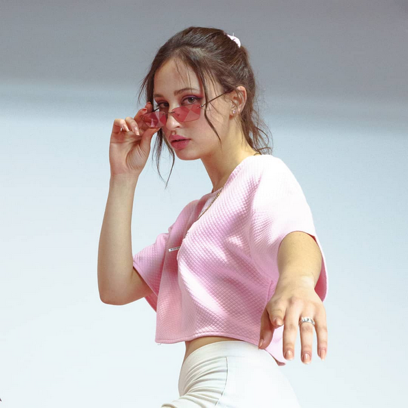

Sofía Gabanna
Nacida en Argentina , Buenos Aires, en el año 2000. Actualmente vive en España, Barcelona. Desde chiquita se encontró rodeada de música, desde clásico , rock argentino, flamenco, blues , jazz, hasta hip hop y rap. Influenciada tanto de Amy Winehouse, Lauryn Hill, Alicia Keys, Whitney Houston, Peggy Lee, como de Violadores del verso, Nach, Cancerbero, Nas , 2pac, Da Brat, Missy Elliot, Fito Paez, Calamaro, Bersuit Vergarabat y muchísimos más artistas.